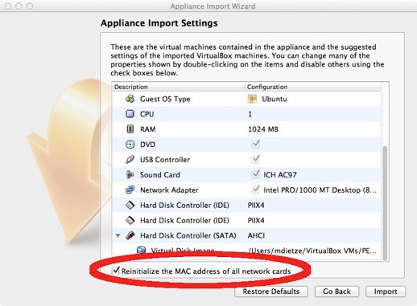
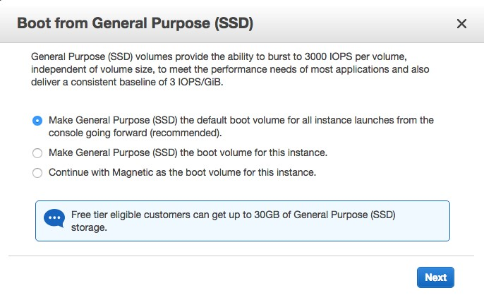

2 Getting Started
2.1 How PEcAn Works in a nutshell
PEcAn provides an interface to a variety of ecosystem models and attempts to standardize and automate the processes of model parameterization, execution, and analysis. First, you choose an ecosystem model, then the time and location of interest (a site), the plant community (or crop) that you are interested in simulating, and a source of atmospheric data from the BETY database (LeBauer et al, 2010). These are set in a “settings” file, commonly named pecan.xml which can be edited manually if desired. From here, PEcAn will take over and set up and execute the selected model using your settings. The key is that PEcAn uses models as-is, and all of the translation steps are done within PEcAn so no modifications are required of the model itself. Once the model is finished it will allow you to create graphs with the results of the simulation as well as download the results. It is also possible to see all past experiments and simulations.
2.2 Quick Start
There are two ways of using PEcAn, via the web interface and directly within R. Even for users familiar with R, using the web interface is a good place to start because it provides a high level overview of the PEcAn workflow.The quickest way to get started is to download the virtual machine or use an AWS instance.
2.2.1 Working with the PEcAn VM
PEcAn consists of a set of scripts and code that is compiled within a Linux operating system and saved in a “virtual machine (VM)”. Virtual machines allow for running consistent set-ups without worrying about differences between operating systems, library dependencies, compiling the code, etc.
To run the PEcAn VM you will need to install VirtualBox, the program that runs the virtual machine http://www.virtualbox.org. On Windows you may see a warning about Logo testing, it is okay to ignore the warning.
After you have Virtual Box installed you’ll need to download the PEcAn virtual machine: http://opensource.ncsa.illinois.edu/projects/artifacts.php?key=PECAN. The virtual machine is available under the “Files” header. Click the 32 or 64 bit “.ova” file and note that the download is ~5 GB so will take from several minutes to hours depending on the connection speed.
To open up the virtual machine you’ll first want to open up VirtualBox.
The first time you use the VM you’ll want to use File → Import Appliance in VirtualBox in order to import the VM. This will create a virtual machine from the disk image. When asked about the Appliance Import Settings make sure you select “Reinitialize the MAC address of all network cards”. This is not selected by default and can result in networking issues since multiple machines might claim to have the same network MAC Address. That said, users who have experienced network connection difficulties within the VM have sometimes had better luck after reinstalling without reinitializing.
 6. Next, click “Import”. You only have to do this Import step once, in the future you can just skip to the next step.
- Start Pecan by double clicking on the icon for the VM. A terminal window will pop up showing the machine booting up which may take a minute. It is done booting when you get to the “pecan32 login:” prompt. You do not need to login as the VM behaves like a server that we will be accessing through you web browser. Feel free to minimize the VM window.
2.2.2 Using AmazonWeb Services (AWS)
Login to Amazon Web Services (AWS) and select the EC2 Dashboard. If this is your first time using AWS you will need to set up an account before you are able to access the EC2 Dashboard. Important: You will need a credit card number and access to a phone to be able to verify AWS account registration. AWS is free for one year.
- Choose AMI
- On the top right next to your name, make sure the location setting is on U.S. East (N. Virginia), not U.S. West (Oregon)
- On the left click, click on EC2 (Virtual servers), then click on “AMIs”, also on the left
- In the search window toggle to change “Owned by me” to “Public images”
- Type “pecan” into the search window
- Click on the toggle button on the left next to PEcAn1.4.6
- Click on the “Launch” button at the top
- Choose an Instance Type
- Select what type of machine you want to run. For this demo the default, t2.micro, will be adequate. Be aware that different machine types incur very different costs, from 1.3 cents/hour to over $5/hr https://aws.amazon.com/ec2/pricing/
- Select t2.micro, then click “Next: Configure Instance Details”
- Select what type of machine you want to run. For this demo the default, t2.micro, will be adequate. Be aware that different machine types incur very different costs, from 1.3 cents/hour to over $5/hr https://aws.amazon.com/ec2/pricing/
- Configure Instance Details
- The defaults are OK. Click “Next: Add Storage”
- Add Storage
- The defaults are OK. Click “Next: Tag Instance”
- Tag Instance
- You can name your instance if you want. Click “Next: Configure Security Group”
- Configure Security Group
- You will need to add two new rules:
- Click “Add Rule” then select “HTTP” from the pull down menu. This rule allows you to access the webserver on PEcAn.
- Click “Add Rule”, leave the pull down on “Custom TCP Rule”, and then change the Port Range from 0 to 8787. Set “Source” to Anywhere. This rule allows you to access RStudio Server on PEcAn.
- Click “Review and Launch” . You will then see this pop-up:

Select the default drive volume type and click Next
- Review and Launch
- Review the settings and then click “Launch”, which will pop up a select/create Key Pair window.
- Key Pair
- Select “Create a new key pair” and give it a name. You won’t actually need this key unless you need to SSH into your PEcAn server, but AWS requires you to create one. Click on “Download Key Pair” then on “Launch Instances”. Next click on “View Instances” at the bottom of the following page.

- Instances
- You will see the status of your PEcAn VM, which will take a minute to boot up. Wait until the Instance State reads “running”. The most important piece of information here is the Public IP, which is the URL you will need in order to access your PEcAn instance from within your web browser (see Demo 1 below).
- Be aware that it often takes ~1 hr for AWS instances to become fully operational, so if you get an error when you put the Public IP in you web browser, most of the time you just need to wait a bit longer. Congratulations! You just started a PEcAn server in the “cloud”!
- When you are done using PEcAn, you will want to return to the “Instances” menu to turn off your VM.
- To STOP the instance (which will turn the machine off but keep your work), select your PEcAn instance and click Actions > Instance state > Stop. Be aware that a stopped instance will still accrue a small storage cost on AWS. To restart this instance at any point in the future you do not want to repeat all the steps above, but instead you just need to select your instance and then click Actions > Instance state > Start
- To TERMINATE the instance (which will DELETE your PEcAn machine), select your instance and click Actions > Instance state > Terminate. Terminated instances will not incur costs. In most cases you will also want to go to the Volumes menu and delete the storage associated with your PEcAn VM.Remember, AWS is free for one year, but will automatically charge a fee in second year if account is not cancelled.